XMB™の基本操作 > キーボードを使う
キーボードを使う
文字の入力が必要な場面になると、自動的にキーボードが表示されます。ここでは、日本語キーボードの使いかたを説明します。各言語のキーボードの使いかたについては、それぞれの言語のユーザーズガイドをご覧ください。
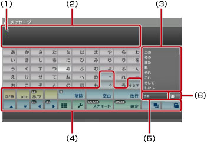
(1) |
文字カーソル |
|---|---|
(2) |
入力フィールド |
(3) |
変換候補が表示される |
(4) |
操作キー |
(5) |
予測変換モードがオンのときに表示される |
(6) |
入力モード表示 |
操作キー一覧
入力状況によって、表示されるキーが異なります。
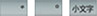 |
入力した文字に濁点、半濁点をつける／入力した文字を小文字にする |
|---|---|
 |
記号や絵文字を入力する |
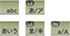 |
入力する文字の種類を切りかえる |
| 文字カーソルを移動する | |
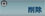 |
文字カーソルの左の文字を削除する |
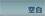 ／ |
空白（スペース）を挿入する／通常変換をする |
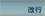 |
改行する |
 |
テキストをコピー／ペースト（貼り付け）する |
 |
ミニサイズキーボードに切りかえる |
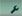 |
オプションメニューを表示する |
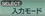 |
入力モードを切りかえる |
 |
未確定の文字を確定する／入力を確定し、キーボードを終了する |
文字を入力する
文字を入力すると、その文字から予測される変換候補が表示されます。方向キーを使って、変換候補エリアから文字を選びます。入力が終わったら、 を選んでキーボードを終了します。
ヒント
- 変換しないときは、文字を入力したあとに を選びます。
- 通常変換中にL1ボタン／R1ボタンを押すと、変換する文節の区切りを変えられます。
- 予測変換モードを使わないときは、 で設定します。
- 入力モードによっては、予測変換機能は使えません。
- 絵文字は、
 （フレンド）でメッセージを作成するときだけ入力できます。
（フレンド）でメッセージを作成するときだけ入力できます。 - 入力できる言語は、PS3™の表示言語に対応しています。例えば、表示言語をフランス語に設定すると、キーボードでフランス語を入力できるようになります。表示言語は、
 （設定）＞
（設定）＞ （本体設定）＞［表示言語］で設定できます。
（本体設定）＞［表示言語］で設定できます。  ボタン+L1ボタンを押すと、入力フィールドにある文字をすべて削除できます。
ボタン+L1ボタンを押すと、入力フィールドにある文字をすべて削除できます。
外付けのキーボードを使う
別売りのUSBキーボードやBluetooth®キーボードを接続して、文字を入力できます。文字の入力画面が表示されているときに、接続したキーボードのいずれかのキーを押すと、入力画面が切りかわります。
ヒント
- Bluetooth®キーボードの接続のしかたについて詳しくは、（設定）＞
 （周辺機器設定）＞［Bluetooth®機器管理］をご覧ください。
（周辺機器設定）＞［Bluetooth®機器管理］をご覧ください。 - 外付けのキーボードを使うときは、予測変換機能は使えません。
- Altキー+Enterキーを押すと、入力フィールド内で改行できます。（フレンド）でメッセージを作成するときなど、改行できるときだけ有効です。
- Shiftキー+Backspaceキーを押すと、入力フィールドにある文字をすべて削除できます。
- Ctrlキー+Vキーを押すと、コピーしたテキストをペースト（貼り付け）できます。最後にコピーしたテキストがペーストされます。
ミニサイズキーボードを使う
フルサイズキーボードで を選ぶと、ミニサイズキーボードに切りかわります。ミニサイズキーボードでは、1つのキーに複数の文字が割り当てられています。
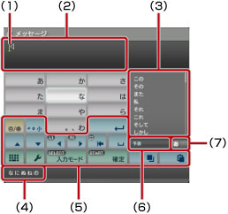
(1) |
文字カーソル |
|---|---|
(2) |
入力フィールド |
(3) |
変換候補が表示される |
(4) |
選んだキーから入力できる文字が表示される |
(5) |
操作キー |
(6) |
予測変換モードがオンのときに表示される |
(7) |
入力モード表示 |
 ボタンを押すたびに、入力できる文字が切りかわります。例として［の］を入力するときは、 を選んで
ボタンを押すたびに、入力できる文字が切りかわります。例として［の］を入力するときは、 を選んで で文字カーソルを［な］のうしろに移動します。その後、 を選んで
で文字カーソルを［な］のうしろに移動します。その後、 を選んで操作キー一覧
入力状況によって、表示されるキーが異なります。
 |
記号を入力する |
|---|---|
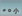 ／ |
濁点、半濁点、小文字を入力する／小文字と大文字を切りかえる |
 |
改行する |
| 文字カーソルを移動する | |
 |
文字カーソルの左の文字を削除する |
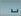 ／ |
空白（スペース）を挿入する／通常変換をする |
|
テキストをコピー／ペースト（貼り付け）する |
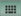 |
フルサイズキーボードに切りかえる |
 |
オプションメニューを表示する |
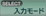 |
入力モードを切りかえる |
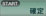 |
未確定の文字を確定する／入力を確定し、キーボードを終了する |